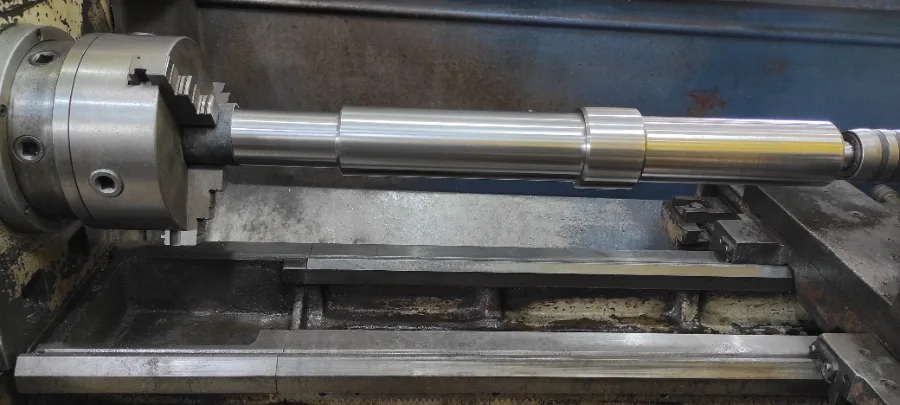
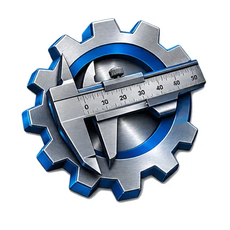

Briefing técnico
Você apresenta a necessidade, as medidas, o material e a aplicação. Juntos, alinhamos o escopo.
GOMES TORNEADORA / SOLUÇÕES INDUSTRIAIS
Da primeira medida à peça pronta.
Usinagem, fabricação e manutenção para
os desafios da sua operação.
01 / O QUE FAZEMOS
Da peça individual ao conjunto industrial, encontre o caminho para o que sua operação precisa.

Peças que encontram seu lugar no funcionamento de toda a operação.
Processos de união e recuperação conforme o material e a aplicação.
Cuidado com os componentes que mantêm sua indústria em movimento.
O desenho da solução começa pelo entendimento do seu processo.
02 / CADA DETALHE IMPORTA
Medir, dimensionar e executar. A atenção a cada detalhe orienta a fabricação e a recuperação de peças para sua aplicação industrial.
Vamos encontrar a sua solução ↗
03 / DO PRIMEIRO CONTATO À ENTREGA
Você apresenta a necessidade, as medidas, o material e a aplicação. Juntos, alinhamos o escopo.
A solução toma forma com os processos de fabricação, usinagem ou manutenção definidos para o serviço.
Concluímos o serviço e mantemos o diálogo sobre a aplicação e as necessidades da sua operação.
MATERIAL. FORMA. FUNÇÃO.
Explore aplicações dos serviços.
04 / VAMOS TIRAR SUA IDEIA DO PAPEL
Uma foto, uma medida ou um desenho.
O primeiro passo é uma boa conversa.
Demonstração: telefone fictício (62) 99999-9999.
Substituir pelo contato oficial antes de divulgar.
Segunda a sexta 08h às 18h
Horário de BrasíliaNo iPhone: Compartilhar → Adicionar à Tela de Início.